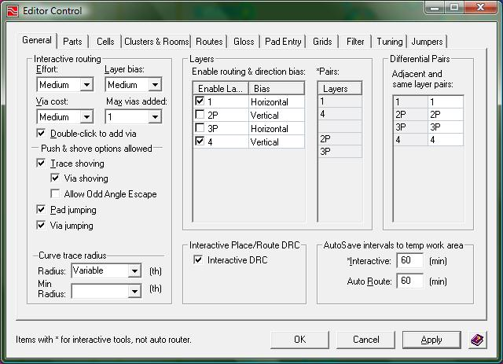
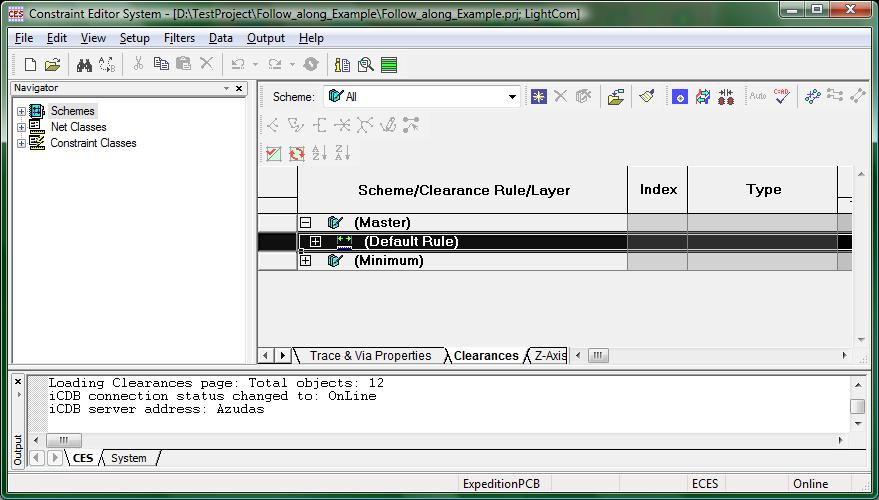

Setup Menu:
(1-Setup_menu.jpg)
The setup menu is one of the more populated menus, but that does not mean that they are all useful. Of all of the options available, only four stick out. Those menu options are the following:
Library Services
Setup Parameters
Editor Control
Constraints
The Library Services option allows, just like in DxDesigner, to import and export parts/cells/padstacks to and from the central library. It operates in the same fashion as the library services in DxDesigner so go here if you want to learn more about it.
The Setup Parameters is an interesting item. Many parameters for vias, layers, and buried resistors are listed in this window popup. All of the values in this window will already be set up for you so you will not have to worry about this window. It is still just nice to know about it.
The Editor Control option is useful for multiple reasons. First, when you first open up the editor control, you will find that under the General tab there is an option to enable and disable routing by layer. Considering you will most likely want only routing to occur on the top and bottom layers you should disable routing on two of the layers (normally layers 2 and 3 as they are the middle layers) as seen in the following image:

(2-Editor_control.jpg)
Routing on Layers 2 and 3 should already be disabled for you, however you must know where to enable/disable routing on each layer.
The last option I want to point out to you is the Constraints Editor System. This system will contain all of the rules you will have your DRC (Design Rule Checker) use when analyzing your board. The CES looks like the following:

(3-CES.jpg)
Due to the very many values that will need to be specified, your instructor should have provided you with a file that will contain all of the constraints you will use. Click the menu File ->Import -> Constraints…
This will open up a browse window where you can browse for the file provided to you (should be a .cts file type). Once you find it, press the ok button and now your CES will be updated with the information from that constraints file. That is all you need to do for the CES, so you can just close the window once you are done loading the constraints file. Do NOT change any of the settings after you have loaded the constraints file unless told otherwise by your instructor.